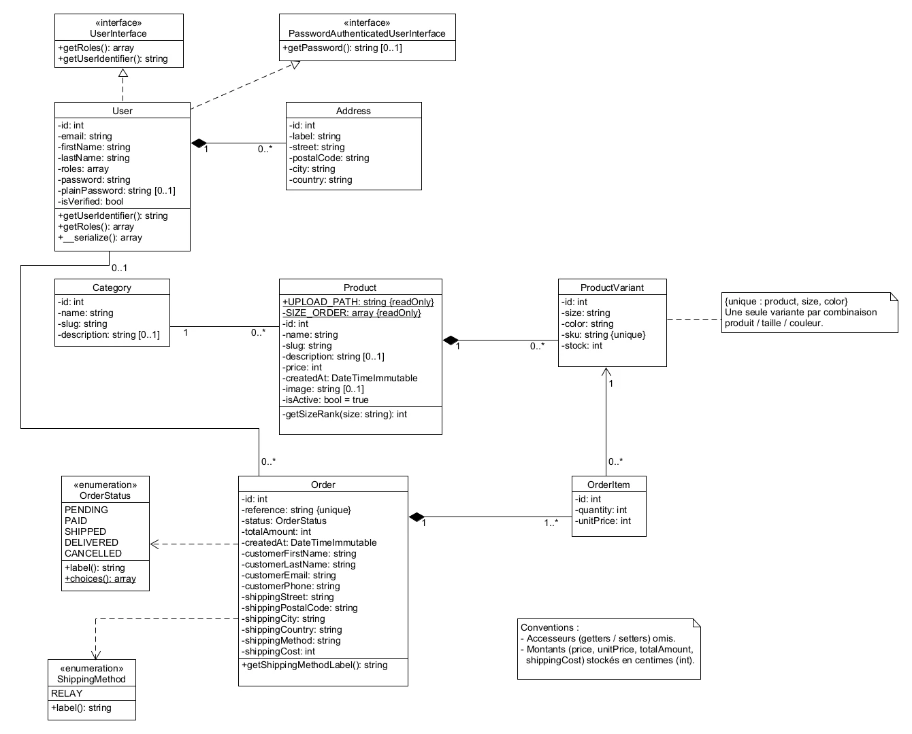
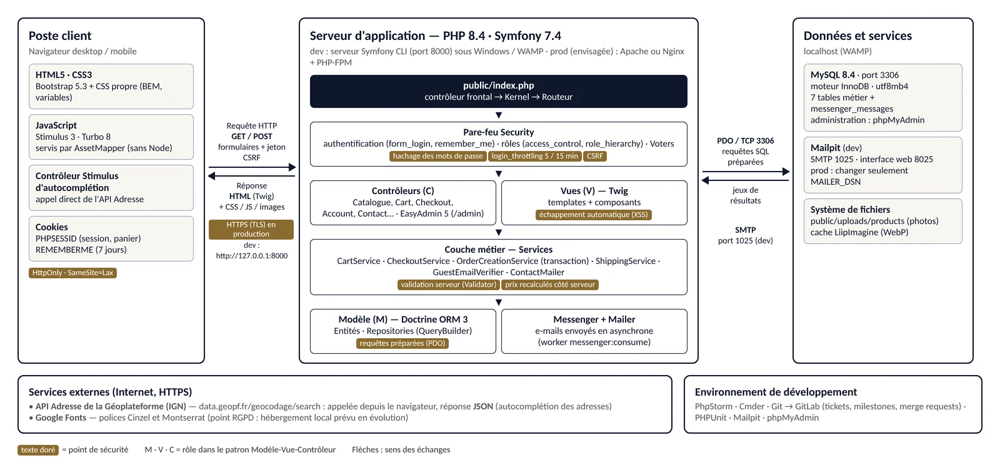
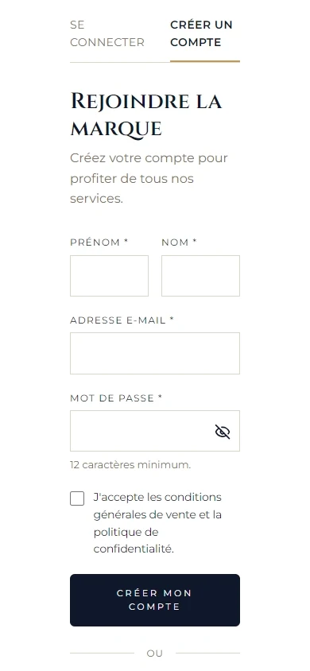

01Étude de cas · Stage
La Petite
Batellerie.
La première boutique en ligne d'une marque française de vêtements nautiques pour hommes, en phase de lancement. Un projet que j'ai conçu et développé seule, de l'analyse des besoins jusqu'à une première version fonctionnelle.
- Rôle
- Développeuse web, seule sur la partie technique
- Durée
- 8 semaines · →
- Stack
- Symfony 7.4 · PHP 8.4 · MySQL · Twig · Stimulus · EasyAdmin
- Livrable
- Version
v1.0-mvp· code disponible sur demande

01
Le contexte.
Sans équipe informatique interne, la marque avait besoin d'une boutique capable de valoriser son identité « élégance nautique », de présenter ses collections et d'offrir un parcours d'achat simple et sécurisé.
Le dirigeant devait aussi pouvoir gérer lui-même les produits, les variantes (tailles, couleurs), les stocks et les commandes, sans connaissances techniques particulières. Chaque modèle existant en plusieurs tailles et coloris, la base de données repose sur un système de variantes de produits, et le catalogue a été pensé pour évoluer sans modifier le code.
02
La conception.
J'ai commencé par l'arborescence, les wireframes et les maquettes desktop et mobile sur Figma, en partant du format mobile. J'ai ensuite modélisé la base de données avec la méthode Merise (MCD, MLD, MPD) et réalisé les diagrammes UML : cas d'utilisation, classes, états-transitions et séquence.
Le projet a été organisé en huit sprints d'une semaine, selon une démarche inspirée de Scrum, avec un suivi sur GitLab (jalons, tickets, merge requests) et un point d'avancement chaque vendredi avec mon tuteur.

03
L'architecture.
L'application suit le modèle MVC de Symfony avec une architecture en couches : les contrôleurs restent légers et délèguent la logique métier à des services (panier, tunnel de commande, création de commande, livraison). La création d'une commande et la mise à jour du stock sont exécutées dans une même transaction.

04
Les fonctionnalités.
Côté client
- Catalogue avec recherche, filtres et tri
- Fiches produits avec choix de la taille et de la couleur
- Panier dynamique (contrôleurs Stimulus)
- Tunnel de commande avec paiement simulé
- Commande sans compte, après vérification de l'adresse e-mail
- Autocomplétion des adresses via l'API de la Géoplateforme
- Espace client et historique des commandes
Côté administration
- Back-office EasyAdmin avec tableau de bord
- Gestion des produits, variantes et stocks
- Gestion des commandes et des utilisateurs
- Images des produits stockées hors de la base de données

05
Sécurité & qualité.
Hachage des mots de passe, hiérarchie des rôles (client, administrateur, super administrateur),
protection CSRF, Voters Symfony pour contrôler l'accès aux
données personnelles et limitation des tentatives de connexion (login_throttling).
Ma veille m'a aussi permis de trouver et corriger des failles dans mon propre code, par exemple une page de confirmation de commande accessible à toute personne connaissant sa référence (IDOR), ou une case des CGV contrôlée uniquement côté navigateur.
- 118tests automatisés PHPUnit
- 44/44cas du cahier de recette conformes
- 3formats d'écran testés : mobile, tablette, desktop
06
Difficultés & apprentissages.
En cours de développement, j'ai découvert que mes tables MySQL utilisaient le moteur MyISAM, qui ne gère ni les transactions ni les clés étrangères. J'ai corrigé la configuration pour passer à InnoDB. J'en retiens qu'il ne suffit pas de savoir utiliser un outil : il faut vérifier qu'il est bien configuré avant de construire dessus.
J'ai aussi dû découper et réorganiser une feuille de style de près de 2 000 lignes. Avec le recul, je définirais l'organisation du CSS dès le départ et j'écrirais les tests au fur et à mesure du développement.
07
Bilan & suite.
Le MVP a été livré dans le délai prévu, sous le tag v1.0-mvp. Il intègre même
plusieurs fonctionnalités prévues au départ comme des évolutions : recherche et tri du
catalogue, historique des commandes, commande en invité, autocomplétion des adresses et
tableau de bord d'administration.
Les prochaines étapes envisagées avec l'entreprise : l'intégration d'un paiement en ligne réel et des services de transport.
Le code de ce projet est disponible sur demande.